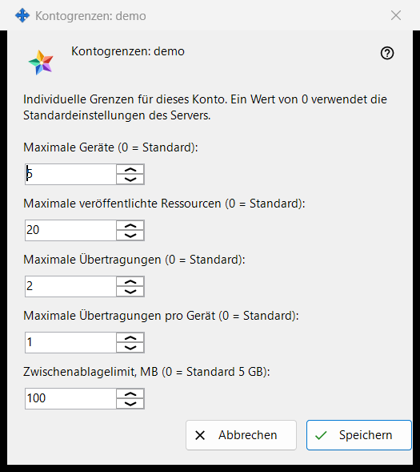
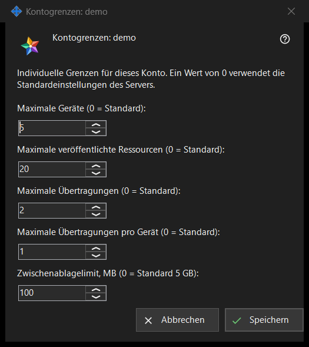

Kontogrenzen
Verwendungszweck
Legt individuelle Grenzen für ein Konto des von Ihnen betriebenen Media Exchange Server fest; ein auf 0 belassener Wert folgt dem Serverstandard. Das Fenster öffnet sich über die Schaltfläche «Grenzen..» unter der Kontoliste auf der Seite Media Exchange Server der Einstellungen von Share Manager, die erscheint, sobald ein Konto ausgewählt ist. Der Titel nennt das Konto: «Kontogrenzen: <login>».


In dieser Reihenfolge
- Wählen Sie das Konto aus und klicken Sie auf «Grenzen..».
- Tragen Sie für jede Grenze, die Sie ändern wollen, eine Zahl ein und lassen Sie 0 für den Serverstandard.
- Klicken Sie auf «Speichern».
- Lesen Sie die Ergebniszeile: «Grenzen für Konto <login> gespeichert.»
Die Elemente
Geräte und Ressourcen
«Maximale Geräte (0 = Standard):» begrenzt die Geräte, die am Konto angemeldet sein dürfen. «Maximale veröffentlichte Ressourcen (0 = Standard):» begrenzt die freigegebenen Ordner und sonstigen Ressourcen, die das Konto auf dem Server veröffentlichen darf.
Übertragungen
«Maximale Übertragungen (0 = Standard):» begrenzt die Übertragungen des gesamten Kontos, und «Maximale Übertragungen pro Gerät (0 = Standard):» begrenzt, was ein einzelnes Gerät davon starten darf.
Zwischenablagelimit
«Zwischenablagelimit, MB (0 = Standard 5 GB):» legt den größten Wert fest, den das Konto an seine Zwischenablage auf dem Server senden kann, in ganzen Megabyte. Ein Limit, das in kleineren Einheiten gespeichert ist, zum Beispiel 512 KB, wird als 0 angezeigt und behält seine genaue Größe, solange Sie dieses Feld nicht ändern.
Speichern und Abbrechen
«Speichern» ersetzt die eigenen Grenzen des Kontos als Ganzes: Jede Zahl über 0 wird zu einer Grenze, jede 0 bedeutet den Serverstandard, und fünf Nullen entfernen die Abweichungen des Kontos. «Abbrechen» ändert nichts. Lehnt der Server einen Wert ab, nennt die Ergebniszeile den Grund, zum Beispiel «Limit nicht zulässig: Es muss eine ganze Zahl innerhalb des vom Server akzeptierten Bereichs sein.»
Managereinstellungen · SFTP-Freigabeeinstellungen · Einstellungen des Austauschservers